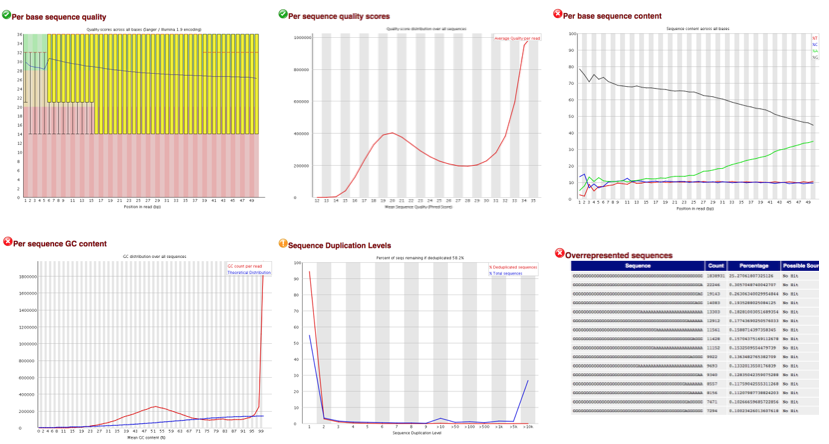

Troubleshooting quality issues of raw data
While the data for this analysis is quite good, it’s unfortunate that that’s not always the case. So now that we know a bit about the types of quality issues to check for in the raw RNA-seq data, how do we troubleshoot them?

To help think through the troubleshooting, we can arrange the data by the main problems encountered:
- Poor quality data
- Poor quality at 3’ end of sequence
- Probable cause(s): Fluorescent signal decay or phasing issues - expected for Illumina data, but take note of the decrease in quality.
- Poor quality across sequence
- Probable cause(s): Problems at the sequencing facility - contact them
- Drop in quality in the middle
- Probable cause(s): Problems at the sequencing facility - contact them
- Large percentage of sequences with low mean quality scores
- Probable cause(s): Problems at the sequencing facility - contact them
- Poor quality at 3’ end of sequence
-
Issues based on read sequence expectations
- Unexpected %GC for organism and/or % of each nucleotide does not remain similar across the read (except for first 10-12 bases for RNA-Seq)
- Probable cause(s): Contaminating sequences: different species, adapters, vector, mitochondrial/rRNA
- High level of sequence duplications
- Probable cause(s): Low complexity library, too many cycles of PCR amplification / too little starting material
- Over-represented sequences more than 1-2%, unless expected based on experimental design
- Probable cause(s): Contaminating sequences: adapters, vector, mitochondrial/rRNA
- Unexpected %GC for organism and/or % of each nucleotide does not remain similar across the read (except for first 10-12 bases for RNA-Seq)